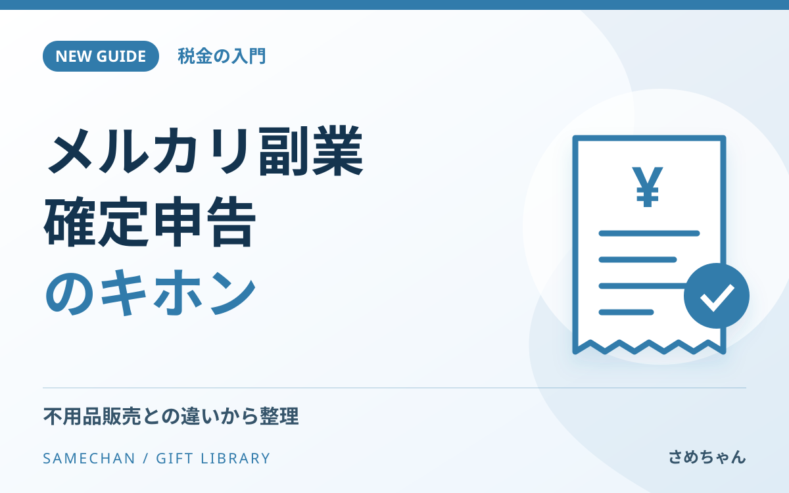
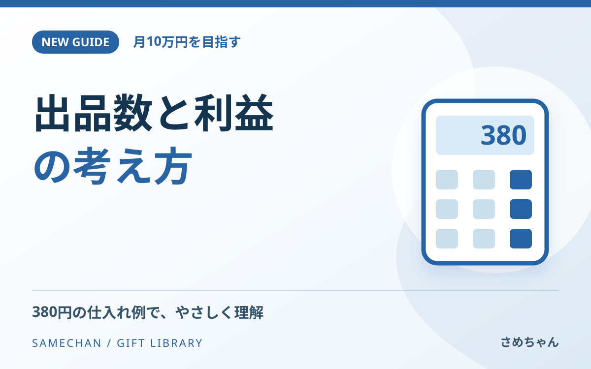
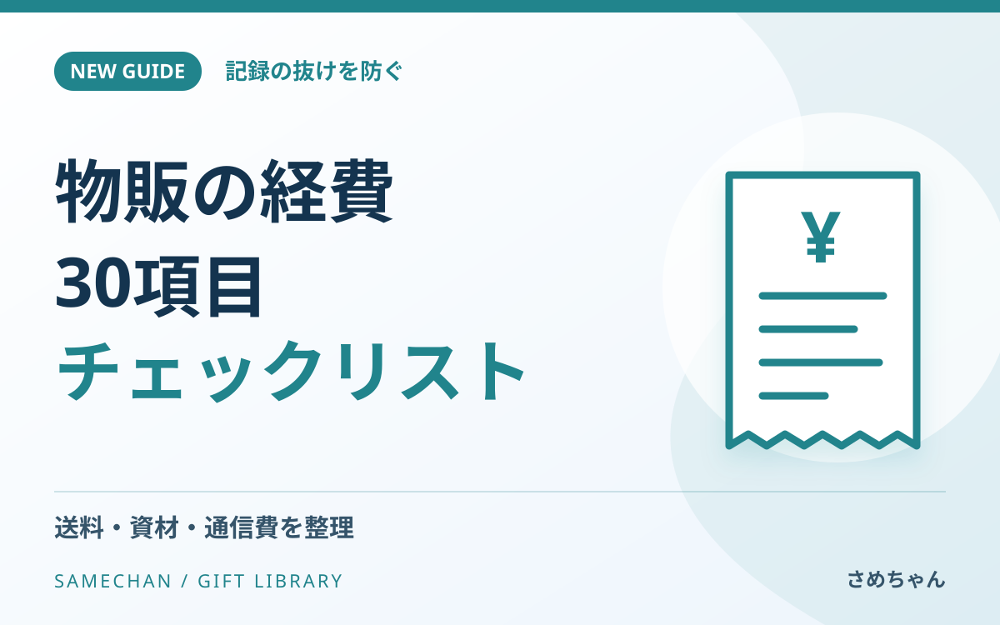
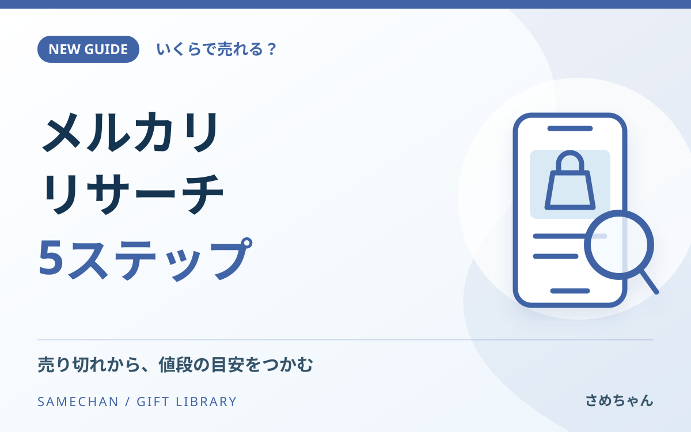

GUIDE 01
メルカリ垢バン注意！出品禁止物20選
うっかり出品を防ぐために。身近な禁止例と、出す前の確認ポイントをまとめました。
読む →SAMECHAN / GIFT LIBRARY · NEW GUIDES
今回の5つの特典をまとめました。各ページで内容を確認でき、PDFも保存できます。
確認用ページです。特典一覧への追加は内容確定後に行います。
GUIDE 01
うっかり出品を防ぐために。身近な禁止例と、出す前の確認ポイントをまとめました。
読む →
GUIDE 02
売れたら、税金はどうなる？ 不用品販売との違いから、記録と相談の準備まで。
読む →
GUIDE 03
たくさん出すだけで終わらせない。売上・利益・作業時間をつなげて、自分の行動量を決めるガイド。
読む →
GUIDE 04
送料も、梱包材も、通信費も。記録の抜けを減らし、業務に必要な支出を整理するために。
読む →
GUIDE 05
感覚で値段を決める前に。似た商品を比べて、売値と手元に残る金額の目安をつかみましょう。
読む →